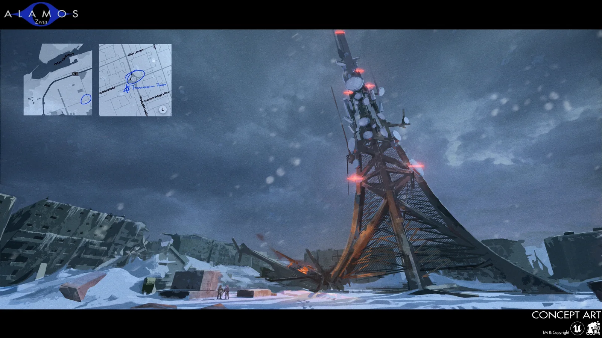

01 / WORLDAFTER THE COLD WAR
WORLD
世界
核事故引发的大爆炸终结了冷战，半个世界沦为废土。
60年后，脱胎于冷战双方的新势力开始争夺遗留科技与新秩序的霸权。各大私营军事公司的佣兵，通过对污染区的勘察和博弈，逐渐走上世界的舞台。
01 / 02

ARCTIC / SEVERODVINSK
北德文斯克
由于不明事故，冰星防卫（IND）仅剩余一名新晋外勤员工前往调查情报称欧洲地区可能仅存一座的完整核反应堆。
其位于前苏联最大的造船之城，也曾坐落世界最大核潜艇的生产基地——北德文斯克。
01 / 08